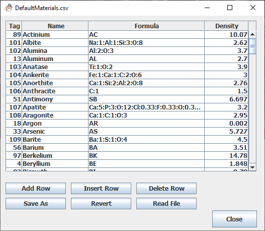

This plugin provides a non-modal dialog that allows the user to
edit materials tag lists.

The Materials Editor UI
What's a "Tag" list?
Most of the ImageJ plugins that use the MuMassCalculator library use a
list of materials saved in a file DefaultMaterials.csv in the ImageJ~/plugins/DialogData
folder. It contains a header followed by a list containing a unique
integer identifier or tag for each material, the material's common
name, formula, and density. The list can be created or modified by any
text editor or spreadsheet application that handles comma separated
value (csv) files. This plugin provides the convenience of a simple
editor that can be called from the ImageJ Plugins menu. The buttons
have Tool Tips that explain their function.
DefaultMaterials.csv is the only material list recognized by
the ImageJ plugins1.
Must have "Tag" as the first column header.
A unique integer tag for each formula.
Formulas for example CaCO3, Calcium Carbonate,
formatted as Ca:1:C:1:O:3.
Densities in grams/cc.
Do not edit the DefaultMaterials.csv file while running a
dependent plugin.
Tag list features
Tags are not required to be sorted in numerical order or
numbered continuously.
The header "Name" can be modified to indicate the lists
contents or list owner etc. e.g. "Minerals" or "Alloys" or "Fred's
List"
The materials list saves a lot of tedious typing of formulas and
densities needed by the plugins.
1. During testing, mutiple materials lists were allowed
and chaos rapidly ensued because each plugin was soon using a different
materials list. Users can create their own custom DefaultMaterials.csv
files and rename/replace them as needed in the DialogData folder.